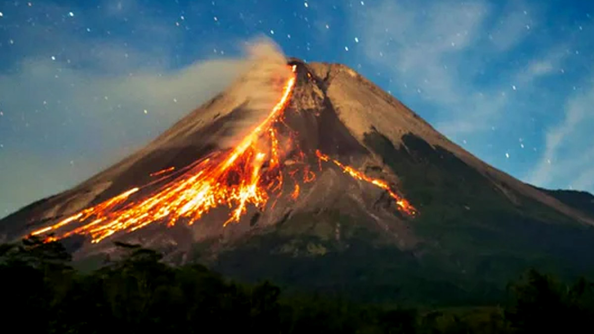

Gunung Merapi
Sejarah Singkat Gunung Merapi
Gunung Merapi adalah gunung api aktif yang terletak di Pulau Jawa, Indonesia. Gunung ini memiliki ketinggian 2.930 meter di atas permukaan laut dan terletak di perbatasan Provinsi Jawa Tengah dan Yogyakarta. Gunung yang kerap disebut sebagai "Wedhus Gembel" ini merupakan salah satu gunung api teraktif di Indonesia dan bahkan di dunia. Berikut adalah sejarah kemunculan Gunung Merapi sampai menjadi gunung api teraktif.
Kemunculan Gunung Merapi
Gunung Merapi terbentuk pada masa pleistosen sekitar 400.000 tahun yang lalu. Gunung ini terbentuk dari hasil letusan vulkanik yang terus menerus dan menghasilkan endapan lahar dan batuan vulkanik. Dalam sejarahnya, Gunung Merapi pernah meletus sekitar 68 kali dan selalu menjadi ancaman bagi masyarakat di sekitarnya.
Berbagai Letusan Gunung Merapi
Gunung Merapi merupakan gunung api aktif yang terletak di Pulau Jawa, Indonesia. Ancaman meletusnya Gunung Merapi selalu menghantui masyarakat di sekitarnya. Karena tak jarang peristiwa letusan tersebut memakan korban jiwa dalam jumlah yang tidak sedikit.
Berikut adalah beberapa peristiwa letusan Gunung Merapi yang pernah terjadi dalam sejarahnya.
1. Letusan tahun 1006 Masehi
Letusan besar Gunung Merapi terjadi pada tahun 1006 Masehi yang mengakibatkan sekitar 1.000 orang tewas. Letusan ini menjadi letusan terbesar yang pernah terjadi di Gunung Merapi dalam sejarahnya.Letusan besar ini menghasilkan aliran lava yang panjangnya mencapai 11 kilometer dan memisahkan dua wilayah di sekitarnya.
2. Letusan tahun 1930
Letusan pada tahun 1930 mengakibatkan sekitar 1.300 orang tewas dan memporak-porandakan beberapa desa di sekitarnya. Letusan ini menghasilkan aliran lava yang membanjiri desa-desa di sekitarnya.
3. Letusan tahun 1994
Letusan pada tahun 1994 mengakibatkan sekitar 60 orang tewas dan 1.300 orang mengungsi. Awan panas dan lava pijar yang dihasilkan kemudian menyebar ke seluruh penjuru Gunung Merapi.
4. Letusan tahun 2006
Letusan pada tahun 2006 ini juga menghasilkan awan panas dan lava pijar yang menyebar ke sekitar Gunung Merapi. Sekitar 5.000 orang mengungsi akibat peristiwa ini.
5. Letusan tahun 2010
Letusan pada tahun 2010 merupakan letusan terbaru Gunung Merapi yang mengakibatkan korban jiwa sebanyak 353 orang dan merusak sekitar 19 ribu hektar lahan pertanian.Akibat letusan ini, muncul awan panas yang meluncur dengan kecepatan 100 kilometer per jam dan menghancurkan segala yang ada di jalurnya.
Itulah ualsan mengenai sejarah Gunung Merapi sebagai salah satu gunung api paling aktif di Indonesia. Sejarah Gunung Merapi menunjukkan betapa pentingnya penanganan bencana alam secara cepat dan efektif.